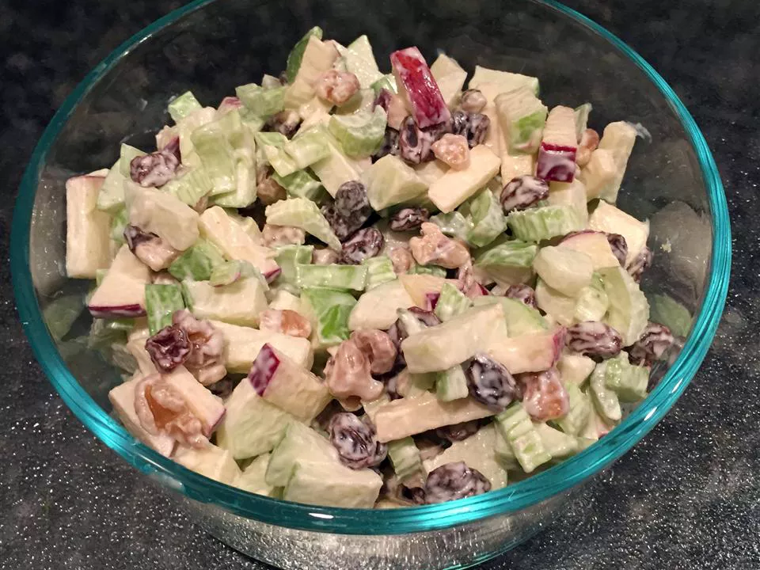

Waldorf Salad

Description
This Waldorf salad recipe is delicious, and you can vary the ingredients to your preference. Try adding diced, roasted chicken to make this salad a meal!
Ingredients
- Mayonnaise
- White Sugar
- lemon juice
- salt
- apples
- Celery
- walnuts
- raisins
Steps
- Whisk together mayonnaise, sufar, lemon juice, and salt in a serving bowl
- Stir in apples , celery , walnuts, and raisins. Cover and chillin the rerigerator until ready to serve.